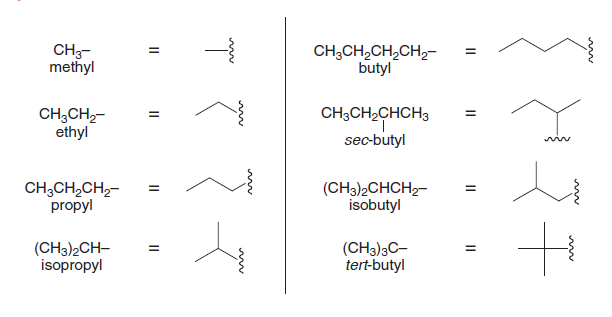
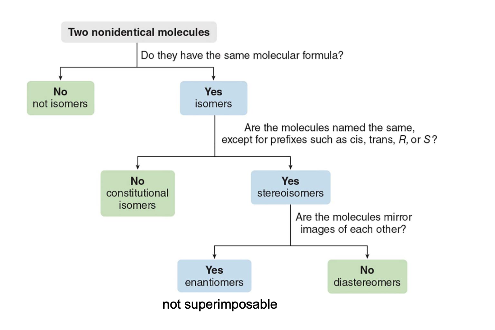
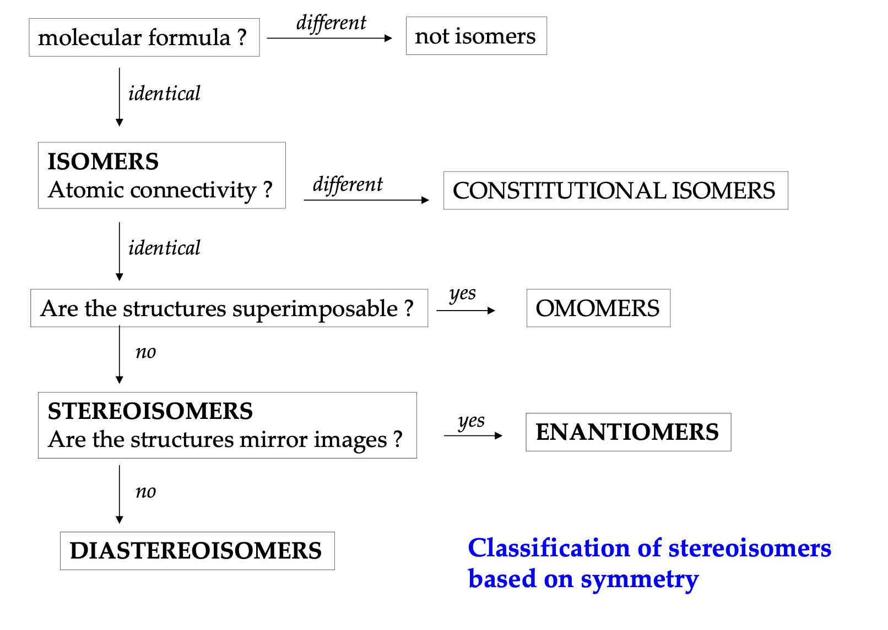

Organic Chemistry
Lessons
- Introduction
- Atomic structure and chemical bonding
- Brønsted-Lowry Acids and Bases, Lewis Acids and Bases
- Functional groups, intermolecular forces and physical properties
- Alkanes and cycloalkanes, structures, conformations and newma projections
- Fundamentals of Stereochemistry: Chirality, Stereogenic Centers, Descriptors, Isomerism, and Optical Activity
Chaatsheet and notes
Alkyl groups
| Number of Carbons | Alkyl Group | Formula | Structure Example |
|---|---|---|---|
| 1 | Methyl | \(\ce{CH3-}\) | \(\ce{-CH3}\) |
| 2 | Ethyl | \(\ce{C2H5-}\) | \(\ce{-CH2CH3}\) |
| 3 | Propyl | \(\ce{C3H7-}\) | \(\ce{-CH2CH2CH3}\) |
| 3 | Isopropyl | \(\ce{C3H7-}\) | \(\ce{-CH(CH3)2}\) |
| 4 | Butyl | \(\ce{C4H9-}\) | \(\ce{-CH2CH2CH2CH3}\) |
| 4 | Isobutyl | \(\ce{C4H9-}\) | \(\ce{-CH2CH(CH3)2}\) |
| 4 | Sec-butyl | \(\ce{C4H9-}\) | \(\ce{-CH(CH3)CH2CH3}\) |
| 4 | Tert-butyl | \(\ce{C4H9-}\) | \(\ce{-C(CH3)3}\) |
| 5 | Pentyl | \(\ce{C5H11-}\) | \(\ce{-CH2CH2CH2CH2CH3}\) |
| 5 | Isopentyl (or Isoamyl) | \(\ce{C5H11-}\) | \(\ce{-CH2CH2CH(CH3)2}\) |
| 5 | Neopentyl | \(\ce{C5H11-}\) | \(\ce{-CH2C(CH3)3}\) |
| 6 | Hexyl | \(\ce{C6H13-}\) | \(\ce{-CH2(CH2)4CH3}\) |
| 7 | Heptyl | \(\ce{C7H15-}\) | \(\ce{-CH2(CH2)5CH3}\) |
| 8 | Octyl | \(\ce{C8H17-}\) | \(\ce{-CH2(CH2)6CH3}\) |
| 9 | Nonyl | \(\ce{C9H19-}\) | \(\ce{-CH2(CH2)7CH3}\) |
| 10 | Decyl | \(\ce{C10H21-}\) | \(\ce{-CH2(CH2)8CH3}\) |
Skeletal structures

Straight-chain alkanes
| Number of Carbons | Alkane Name | Formula |
|---|---|---|
| 1 | Methane | \(\ce{CH4}\) |
| 2 | Ethane | \(\ce{C2H6}\) |
| 3 | Propane | \(\ce{C3H8}\) |
| 4 | Butane | \(\ce{C4H10}\) |
| 5 | Pentane | \(\ce{C5H12}\) |
| 6 | Hexane | \(\ce{C6H14}\) |
| 7 | Heptane | \(\ce{C7H16}\) |
| 8 | Octane | \(\ce{C8H18}\) |
| 9 | Nonane | \(\ce{C9H20}\) |
| 10 | Decane | \(\ce{C10H22}\) |
| 11 | Undecane | \(\ce{C11H24}\) |
| 12 | Dodecane | \(\ce{C12H26}\) |
| 13 | Tridecane | \(\ce{C13H28}\) |
| 14 | Tetradecane | \(\ce{C14H30}\) |
| 15 | Pentadecane | \(\ce{C15H32}\) |
| 16 | Hexadecane | \(\ce{C16H34}\) |
| 17 | Heptadecane | \(\ce{C17H36}\) |
| 18 | Octadecane | \(\ce{C18H38}\) |
| 19 | Nonadecane | \(\ce{C19H40}\) |
| 20 | Icosane | \(\ce{C20H42}\) |
Types of stereoisomers
| Type | Mirror Image? | Examples |
|---|---|---|
| Enantiomers | Yes, non-superimposable | L-alanine and D-alanine |
| Diastereoisomers | No | Cis-trans isomers, epimers (D-glucose vs. D-galactose), anomers (α-D-glucose vs. β-D-glucose) |
| Conformational Isomers | No | Chair and boat forms of cyclohexane, gauche and anti in butane |
| Atropisomers | No | Restricted rotation biaryls (substituted biphenyls) |
| Configurational Isomers | Depends | Encompasses both enantiomers and diastereoisomers |
| Homomers | Identical | Two ethanol molecules |
Stereochemistry defs cheatsheet
| Category | Term | Definition | Key Characteristics |
|---|---|---|---|
| Molecular Symmetry | Chiral | Molecule that cannot be superimposed on its mirror image. | - Has at least one stereogenic center - No plane of symmetry - Exists as two enantiomers (R and S forms) |
| Achiral | Molecule that can be superimposed on its mirror image. | - Often has a plane of symmetry - No stereogenic centers in most cases - No enantiomers |
|
| Meso Compound | Achiral molecule with stereogenic centers, has internal symmetry. | - Contains stereogenic centers - Plane of symmetry makes it superimposable on its mirror image - Optically inactive |
|
| Types of Isomers | Structural Isomers | Molecules with the same molecular formula but different connectivity. | - Different physical and chemical properties - Examples: chain isomers, positional isomers |
| Stereoisomers | Molecules with the same molecular formula and connectivity but different spatial arrangements. | - Includes enantiomers and diastereomers | |
| Conformational Isomers | Isomers that differ by rotation around single bonds. | - Examples: staggered and eclipsed ethane - Same connectivity, flexible arrangement |
|
| Configurational Isomers | Isomers that cannot be interconverted without breaking bonds. | - Includes enantiomers and diastereomers - Require bond breaking to interconvert |
|
| Types of Stereoisomers | Enantiomers | Non-superimposable mirror-image molecules. | - Opposite configurations at all stereogenic centers - Same physical properties (except optical rotation direction) |
| Diastereomers | Stereoisomers that are not mirror images of each other. | - Different configurations at one or more (but not all) stereogenic centers - Different physical and chemical properties |
|
| Enantiomeric Properties | Optical Activity | Ability of chiral molecules to rotate plane-polarized light. | - Clockwise rotation: (+) or dextrorotatory - Counterclockwise rotation: (-) or levorotatory - Racemic mixtures are optically inactive |
| Racemic Mixture | 1:1 mixture of two enantiomers, optically inactive as rotations cancel. | - Forms |
racemate crystal structure in solids
- Often requires chiral resolution techniques to separate |
| Stereochemical Rules | Cahn-Ingold-Prelog (CIP) | System to assign priority to substituents on a stereocenter for R/S configurations. | - Priority based on atomic number, bond multiplicity, and connectivity
- Used to determine R (clockwise) or S (counterclockwise) configurations at stereogenic centers |
| | R/S Configuration | Labels to specify the absolute configuration of a chiral center. | - Assign priorities, arrange so the lowest priority is away, and trace from highest to lowest to determine R or S |
| | E/Z Configuration | Used to designate the configuration of double bonds (geometric isomerism). | - E: higher priority groups on opposite sides
- Z: higher priority groups on the same side |
| Stereogenic Centers | Stereogenic Center | Atom, usually carbon, with four different substituents, giving rise to chirality. | - Necessary for chirality
- Each stereogenic center can have R or S configuration |
| | Prochiral Center | Atom that can become chiral by changing one substituent. | - Important in reactions that introduce chirality
- Example: carbonyl carbon in prochiral ketones |
| Stereochemistry in Reactions | Enantioselective | Reaction that selectively produces one enantiomer over the other. | - Common in synthesis of chiral drugs
- Requires chiral catalysts or reagents |
| | Diastereoselective | Reaction that favors the formation of one diastereomer over others. | - Involves chiral centers but doesn’t create mirror images
- Used in complex molecule synthesis |
| | Stereospecific | Reaction where a specific stereoisomer of the reactant leads to a specific stereoisomer of the product. | - Examples: SN2 reactions that invert configuration
- Mechanism inherently linked to stereochemistry |
\(\text{pK}_a\) value trends
- Lower pKa (< 0): Very strong acids, very weak conjugate bases.
- pKa 0 to 5: Strong to moderate acids, weak conjugate bases.
- pKa 5 to 14: Weak acids, moderate conjugate bases.
- pKa > 14: Very weak acids, strong bases.
| Conjugate Acid pKa | Conjugate Base Stability | Leaving Group Quality | Example |
|---|---|---|---|
| pKa < 0 | Very stable (weak base) | Excellent leaving group | \(\text{I}^-\), \(\text{Br}^-\), \(\text{Cl}^-\) |
| pKa 5–15 | Moderately stable | Moderate leaving group | \(\text{H}_2\text{O}\), alcohols |
| pKa > 15 | Unstable (strong base) | Poor leaving group | \(\text{OH}^-\), \(\text{NH}_2^-\), alkoxides |
Acidity and basicity trends
| Factor | Trend in Acidity | Trend in Basicity | Explanation |
|---|---|---|---|
| Down a Group (e.g., HCl to HI) | Acidity increases | Basicity decreases | Larger atoms down a group form weaker bonds with \(\text{H}\), increasing acidity. Conjugate bases are more stable. |
| Across a Period (e.g., CH₄ to HF) | Acidity increases | Basicity decreases | More electronegative atoms across a period hold onto negative charge better, making stronger acids. |
| Electronegativity | Higher electronegativity = stronger acid | Lower electronegativity = stronger base | More electronegative atoms stabilize the conjugate base better, increasing acidity. |
| Atomic Size | Larger atoms = stronger acid | Smaller atoms = stronger base | Larger atoms stabilize the negative charge in the conjugate base, enhancing acidity. |
| Inductive Effect | Electron-withdrawing groups increase acidity | Electron-donating groups increase basicity | Electronegative groups near acidic sites pull electron density, stabilizing the conjugate base. |
| Resonance | Resonance stabilization increases acidity | Resonance decreases basicity | Delocalization of negative charge stabilizes the conjugate base, favoring acidity. |
| Hybridization | More s-character = stronger acid | Less s-character = stronger base | \(sp\) hybridized atoms hold negative charge closer, stabilizing the conjugate base. |
| Solvent Effects | Protic solvents stabilize acids | Aprotic solvents stabilize bases | Protic solvents can stabilize conjugate bases through hydrogen bonding, enhancing acidity. |
Deprotonation step, should it apply?
If you see O or N with three bonds and a positive charge after the nucleophilic attack, apply deprotonation.
| Situation | Apply Deprotonation? | Reason |
|---|---|---|
| Oxygen or nitrogen with three bonds and a positive charge (e.g., \(\text{R-OH}_2^+\) or \(\text{R-NH}_3^+\)) | Yes | Oxygen and nitrogen prefer neutral states with fewer bonds. |
| Nitrogen with four bonds and a positive charge (e.g., \(\text{R}_4\text{N}^+\)) | No | Quaternary ammonium ions are stable with a positive charge. |
| After nucleophilic attack by neutral molecule (e.g., \(\text{H}_2\text{O}\) or \(\text{NH}_3\)) | Usually Yes | The nucleophile gains a proton and needs to lose it for stability. |
| Leaving group departure without proton gain (e.g., direct SN1/SN2) | No | No positive intermediate is formed that requires neutralization. |
Alkyl halides, reaction type based off of class type (primary, secondary, tertiary)
| Class of Halide | Common Mechanisms | Conditions Favoring Each Mechanism | Example Reaction | Product |
|---|---|---|---|---|
| Primary Alkyl Halide | \(\text{S}_\text{N}2\) | Strong nucleophile in aprotic solvent | \(\text{CH}_3\text{CH}_2\text{Br} + \text{OH}^- \rightarrow \text{CH}_3\text{CH}_2\text{OH} + \text{Br}^-\) | Ethanol (\(\text{CH}_3\text{CH}_2\text{OH}\)) |
| E2 | Strong base (e.g., NaOEt) | \(\text{CH}_3\text{CH}_2\text{CH}_2\text{Br} + \text{EtO}^- \rightarrow \text{CH}_2=\text{CHCH}_3 + \text{EtOH}\) | Propene (\(\text{CH}_2=\text{CHCH}_3\)) | |
| No \(\text{S}_\text{N}1\) | Primary carbocations are unstable | - | - | |
| No E1 | Primary carbocations are unstable | - | - | |
| Secondary Alkyl Halide | \(\text{S}_\text{N}2\) | Strong nucleophile, aprotic solvent | \(\text{CH}_3\text{CHBrCH}_3 + \text{CN}^- \rightarrow \text{CH}_3\text{CH(CN)CH}_3 + \text{Br}^-\) | Isopropyl cyanide (\(\text{CH}_3\text{CH(CN)CH}_3\)) |
| E2 | Strong base (e.g., NaOEt or NaOH) | \(\text{CH}_3\text{CHBrCH}_3 + \text{EtO}^- \rightarrow \text{CH}_3\text{CH=CH}_2 + \text{EtOH}\) | Propene (\(\text{CH}_3\text{CH=CH}_2\)) | |
| \(\text{S}_\text{N}1\) (less common) | Weak nucleophile, polar protic solvent | \(\text{CH}_3\text{CHBrCH}_3 + \text{H}_2\text{O} \rightarrow \text{CH}_3\text{CH(OH)CH}_3 + \text{HBr}\) | Isopropanol (\(\text{CH}_3\text{CH(OH)CH}_3\)) | |
| E1 | Weak base, polar protic solvent | $text{CH}_3\text{CHBrCH}_3 + \text{H}_2\text{O} \ |
rightarrow \text{CH}_2=\text{CHCH}_3 + \text{HBr}$ | Propene (\(\text{CH}_3\text{CH=CH}_2\)) | | Tertiary Alkyl Halide | No \(\text{S}_\text{N}2\) due to steric hindrance | - | - | - | | | \(\text{S}_\text{N}1\) | Weak nucleophile, polar protic solvent | \(\text{(CH}_3\text{)}_3\text{CBr} + \text{H}_2\text{O} \rightarrow \text{(CH}_3\text{)}_3\text{COH} + \text{HBr}\) | tert-Butyl alcohol (\(\text{(CH}_3\text{)}_3\text{COH}\)) | | | E2 | Strong base (e.g., NaOH, NaOEt) | \(\text{(CH}_3\text{)}_3\text{CBr} + \text{OH}^- \rightarrow \text{(CH}_3\text{)}_2\text{C=CH}_2 + \text{H}_2\text{O} + \text{Br}^-\) | Isobutene (\(\text{(CH}_3\text{)}_2\text{C=CH}_2\)) | | | E1 | Weak base, polar protic solvent | \(\text{(CH}_3\text{)}_3\text{CBr} + \text{H}_2\text{O} \rightarrow \text{(CH}_3\text{)}_2\text{C=CH}_2 + \text{HBr}\) | Isobutene (\(\text{(CH}_3\text{)}_2\text{C=CH}_2\)) |
Determining the relationships between molecules

